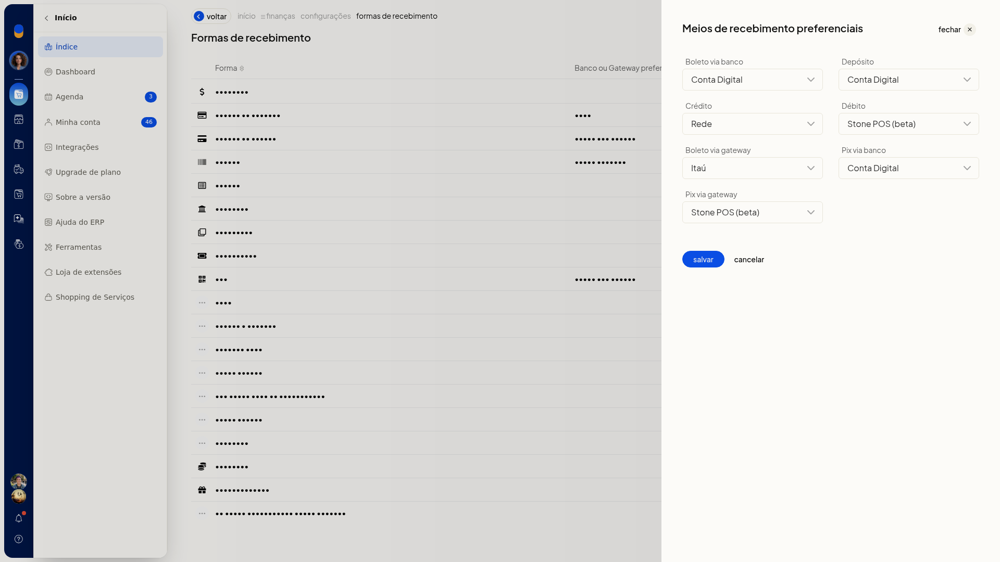
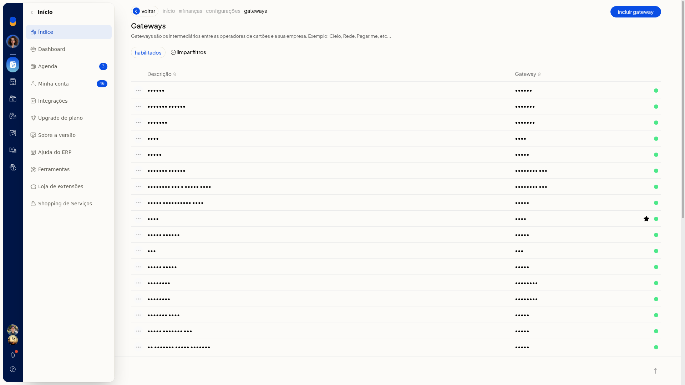
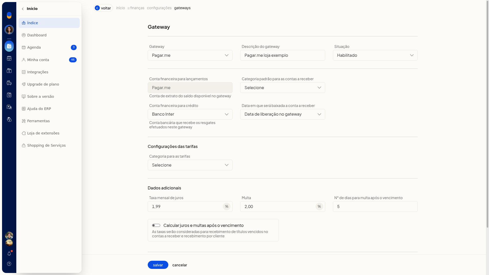

Banco Inter
No ERP da Olist, o Banco Inter não tem tela própria em Finanças. Ele aparece como conta financeira já cadastrada e como opção de boleto.
Você pode defini-lo como banco preferencial de boleto, usá-lo como conta de destino ou de tarifas de uma forma de recebimento e indicá-lo como conta que recebe os resgates de um gateway.
Pré-requisitos
- A conta financeira do Banco Inter já precisa existir quando o crédito ou as tarifas forem lançados nela.
- Se a opção não aparecer para você, peça acesso ao administrador da conta.
Importante
- O Banco Inter não é um item do hub de Finanças. Ele só aparece como conta financeira ou como opção de boleto.
- O Banco Inter aparece em Boleto via banco e em Boleto via gateway. Nas opções vistas, ele não entra em depósito, crédito, débito nem Pix.
Instruções
Boleto preferencial
-
Acesse Configurações > Configurações ERP > Finanças > Formas de recebimento.
-
Clique em Preferências. Se o primeiro clique mostrar só a dica Configurar meios de recebimento preferenciais, clique em Preferências de novo.
-
No painel Meios de recebimento preferenciais, selecione Banco Inter em Boleto via banco, em Boleto via gateway ou nos dois. Cada meio fica associado ao banco ou gateway que o ERP deve usar de preferência.

Conta na forma de recebimento
-
Acesse Configurações > Configurações ERP > Finanças > Formas de recebimento.
-
Clique em Incluir forma de recebimento.
-
Se o Destino for Conta financeira, escolha Banco Inter.
-
Se a Tarifação for Em dia específico, escolha Banco Inter na conta financeira das tarifas e informe o dia, a categoria, a Tarifa fixa, a Taxa e a Taxa adicional por parcela.
-
Clique em salvar. A forma fica gravada com destino, tarifas e antecipação definidos.

Conta de crédito do gateway
-
Acesse Configurações > Configurações ERP > Finanças > Cadastro de gateways.
-
Clique em Incluir gateway.
-
Em Conta financeira para crédito, selecione Banco Inter. Essa é a conta bancária que recebe os resgates efetuados no gateway.



Resultado
A lista de formas de recebimento mostra cada forma com o banco ou gateway preferencial e o status. No painel Meios de recebimento preferenciais, cada meio tem o seu seletor.
Informações adicionais
- Em Boleto via gateway, as opções vistas são Banco Inter e Pagar.me.
- Em Boleto via banco, Banco Inter aparece junto das demais contas e gateways já disponíveis para boleto.